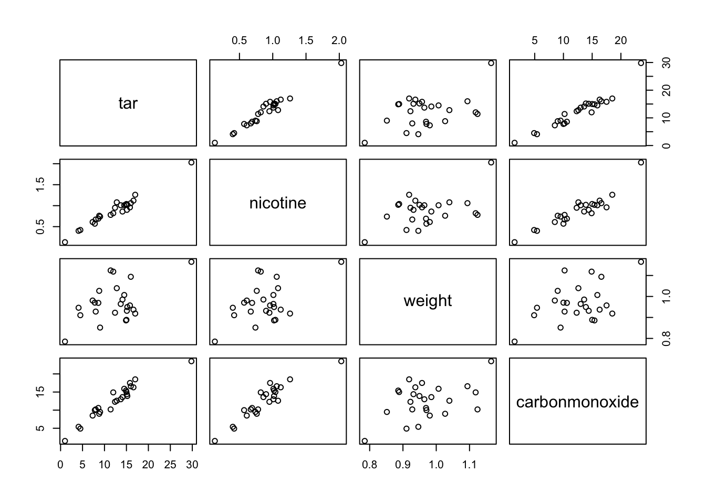
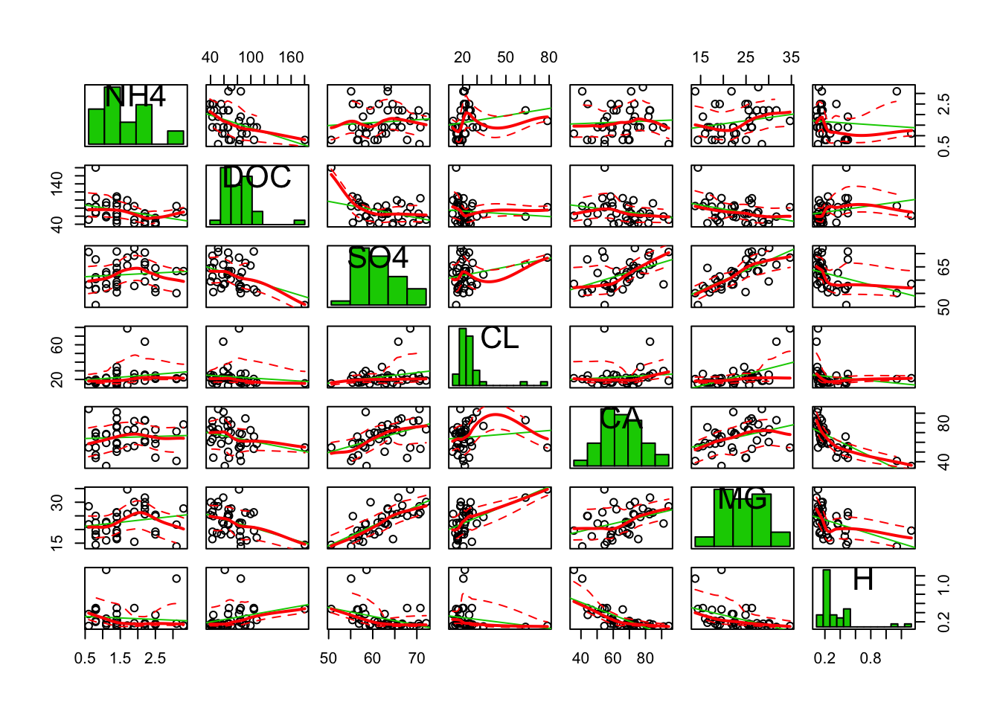

Assignments week 3
Wouter van Amsterdam
2017-11-06
Last updated: 2017-11-06
Code version: 34e4b73
Day 9 Multiple regression
Exercises with R
Introduction Below you will find a worked example that helps you understand how to perform model building in multiple regression and analysis of covariance in R.
We are interested in the diastolic blood pressure (y) for people on two different treatments (group). Within the two treatments different dosages were given. First type in the data (or Copy-Paste):
y <- c(87,86.5,89,88.5,87.5,88,86.5,87,85,86,85,83)
dose <- c(5,6,7,8,9,10,5,6,7,8,9,10)
group <- c(0,0,0,0,0,0,1,1,1,1,1,1)Let’s take a look at a plot of the data:
interaction.plot(dose, group, y , mean, ylab = "Bloodpressure")Use
help(interaction.plot)to see how it works. R uses “:” to denote an interaction so group:dose is the R interaction term in a model.
It looks like there may be an interaction in the data: group 0 has higher blood pressure levels than group 1 in the higher dosages. If there is an explanatory variable in the data file that is categorical (other than 0-1), then you should tell R this by using the function factor(). So factor(group) tells R that group is not a numeric variable but that its numbers should be used as group labels. To fit an ANOVA model you can use either of the following:
model.an <- lm(y~group)
model.an <- glm(y~group, family = gaussian)In the second statement, the
family=gaussianpart may be left out since the gaussian (normal) is the default (“GLM†stands for generalized linear model, of which ANOVA, linear regression, and logistic regression models are special cases). The result of the ANOVA model will be stored in model.an. In the second case, this will be an object of glm-type because you used glm to create it. To see what is in it usenames(model.an)and if you want to see something specific use for instancemodel.an$coefficients. To get the table with the estimates:
summary(model.an)
Call:
glm(formula = y ~ group, family = gaussian)
Deviance Residuals:
Min 1Q Median 3Q Max
-2.4167 -0.5000 0.0000 0.8333 1.5833
Coefficients:
Estimate Std. Error t value Pr(>|t|)
(Intercept) 87.7500 0.4930 177.989 < 2e-16 ***
group -2.3333 0.6972 -3.347 0.00741 **
---
Signif. codes: 0 '***' 0.001 '**' 0.01 '*' 0.05 '.' 0.1 ' ' 1
(Dispersion parameter for gaussian family taken to be 1.458333)
Null deviance: 30.917 on 11 degrees of freedom
Residual deviance: 14.583 on 10 degrees of freedom
AIC: 42.394
Number of Fisher Scoring iterations: 2The function
drop1(fit, test = "F")looks at the variables in the model ‘fit’, then leaves out the terms one by one and calculates the F-test for every term if it were to be left out. Of course, inmodel.anthere is only one variable so you just get one test. Note that the p-value of the F-test is exactly the same as the p-value of the t-test in the model summary. To fit the model without the interaction:
model.anc <- glm(y~group + dose, family = gaussian)
summary(model.anc)
Call:
glm(formula = y ~ group + dose, family = gaussian)
Deviance Residuals:
Min 1Q Median 3Q Max
-1.8809 -0.7143 0.3095 0.8036 1.2619
Coefficients:
Estimate Std. Error t value Pr(>|t|)
(Intercept) 89.3571 1.5992 55.876 9.48e-13 ***
group -2.3333 0.6933 -3.366 0.00831 **
dose -0.2143 0.2030 -1.056 0.31858
---
Signif. codes: 0 '***' 0.001 '**' 0.01 '*' 0.05 '.' 0.1 ' ' 1
(Dispersion parameter for gaussian family taken to be 1.441799)
Null deviance: 30.917 on 11 degrees of freedom
Residual deviance: 12.976 on 9 degrees of freedom
AIC: 42.993
Number of Fisher Scoring iterations: 2drop1(model.anc, test = "F") Single term deletions
Model:
y ~ group + dose
Df Deviance AIC F value Pr(>F)
<none> 12.976 42.993
group 1 29.309 50.771 11.3284 0.008313 **
dose 1 14.583 42.394 1.1147 0.318583
---
Signif. codes: 0 '***' 0.001 '**' 0.01 '*' 0.05 '.' 0.1 ' ' 1The column “Deviance” contains the residual sums of squares for different models. The first line gives the residual sums of squares if none of the terms is dropped so for the model with both group and dose in it. The second line gives the residual sum of squares for the model without group so for the model with only dose in it. The difference in these residual sums of squares gives the sum of squares for the group: 29.310-12.976 = 16.334. In the same way the sum of squares for dose can be obtained (14.583-12.976 = 1.607). For dose and group the F-values and the p-values are shown. With this information an ANOVA table could be constructed.
This somewhat elaborate method is simplified by using the Anova function in the library car:
library(car) #Note: you might have to install this library first, using Packages, Install packages Warning: package 'car' was built under R version 3.4.2Anova(model.anc, test.statistic = "F")Analysis of Deviance Table (Type II tests)
Response: y
Error estimate based on Pearson residuals
SS Df F Pr(>F)
group 16.3333 1 11.3284 0.008313 **
dose 1.6071 1 1.1147 0.318583
Residuals 12.9762 9
---
Signif. codes: 0 '***' 0.001 '**' 0.01 '*' 0.05 '.' 0.1 ' ' 1The model with an interaction can be fitted as: (or the exact same model can be given by:)
model.int <- glm(y~group + dose + group:dose, family=gaussian)
model.int <- glm(y~group*dose, family = gaussian)Note that if you now use the drop1 function, only the interaction will be evaluated for possible dropping:
drop1(model.int, test = "F")Single term deletions
Model:
y ~ group * dose
Df Deviance AIC F value Pr(>F)
<none> 6.5476 36.785
group:dose 1 12.9762 42.993 7.8545 0.02311 *
---
Signif. codes: 0 '***' 0.001 '**' 0.01 '*' 0.05 '.' 0.1 ' ' 1Anova(model.int, test.statistic = "F")Analysis of Deviance Table (Type II tests)
Response: y
Error estimate based on Pearson residuals
SS Df F Pr(>F)
group 16.3333 1 19.9564 0.002091 **
dose 1.6071 1 1.9636 0.198705
group:dose 6.4286 1 7.8545 0.023105 *
Residuals 6.5476 8
---
Signif. codes: 0 '***' 0.001 '**' 0.01 '*' 0.05 '.' 0.1 ' ' 1R does this because it makes little sense to drop a main effect while the interaction is still in the model; generally, one first checks whether the interaction can be removed. The interaction term is statistically significant, so the trend in blood pressure over the dosages is different for the two treatment groups.
**this should be somewhere else, as full does not exist yet > Checking Multicollinearity (used on day 10) The variance inflation factor can be obtained using the vif() function in the car package. The argument to the vif() function is a model you have already fit.
vif(full) temp factories population wind rainfall daysrain 3.763553 14.703175 14.340318 1.255460 3.404904 3.443932
To get the tolerance instead, you can invert the VIF: 1/vif(full)
A note on automatic variable selection in R
R does not have the same type of forward, backward and stepwise selection procedures as SPSS. The add1 and drop1 can be used to examine variables and decide which variable should be added/dropped next. The actual adding and dropping is not done automatically and needs to be done by the analyst, so a new model is fitted and again checked for variables that can be added/dropped. Note that the add1 and drop1 functions both give Akaike’s Information Criterion (AIC, to be treated during Modern Methods in Data Analysis) by default; an F-test can be obtained by using the option test=“F” in the command.
5.
This is a repeat of exercise #1, but now in R. Compare the results with those obtained in SPSS. The dataset with SO2 data from the lecture is available in the dataset so2.RData. Try to repeat the findings from the lecture notes using R. How will you do the variable selection in R?
load(amstR::fromParentDir("data/so2.RData"))
str(so2)'data.frame': 41 obs. of 9 variables:
$ city : Factor w/ 41 levels "Albany ",..: 7 33 30 9 32 15 38 4 1 41 ...
$ SO2 : num 110 94 69 65 61 56 56 47 46 36 ...
$ temp : num 50.6 50 54.6 49.7 50.4 49.1 55.9 55 47.6 54 ...
$ factories : num 3344 343 1692 1007 347 ...
$ population: num 3369 179 1950 751 520 ...
$ wind : num 10.4 10.6 9.6 10.9 9.4 9 9.5 9.6 8.8 9 ...
$ rainfall : num 34.4 42.8 39.9 35 36.2 ...
$ daysrain : num 122 125 115 155 147 127 105 111 135 114 ...
$ region : Factor w/ 3 levels "Southeast","Northeast",..: 3 2 2 3 2 2 3 1 2 2 ...
- attr(*, "variable.labels")= Named chr "name of city" "SO2 (microgr/cubic m)" "mean yearly temp (degrees F)" "number of factories > 20 employees" ...
..- attr(*, "names")= chr "city" "SO2" "temp" "factories" ...
- attr(*, "codepage")= int 1252First some histograms of the numeric variables
# find out which variables in so2 are numeric
num_vars <- colnames(so2)[sapply(so2, is.numeric)]
# how many are there
length(num_vars)[1] 7par(mfrow = c(2, 4))
for (variable in num_vars) {
hist(so2[[variable]], main = variable, xlab = variable)
}
par(mfrow = c(1, 1))
Then the pairwise scatterplots
pairs(so2)
Correlation plot of all numeric variables (this can be done nicely with the package corrplot)
cor_matrix <- cor(so2[, num_vars])
corrplot::corrplot(cor_matrix, method = "number")
Now for the model building. We can use the step function for variable selection. Note that it uses the Akaike Information criterion for variable selection. NB we must remove the city variable, as this is merely a label of the observations, and is unique for each row.
model_vars <- setdiff(colnames(so2), "city") # take all colnames of so2, remove 'city' from these names
fit0 <- lm(SO2~1, data = so2[, model_vars])
fit_full <- lm(SO2~., data = so2[, model_vars]) # use ~. to include all variables except for SO2
steps_forward <- step(fit0, scope = list(lower = fit0, upper = fit_full), direction = "forward")Start: AIC=259.76
SO2 ~ 1
Df Sum of Sq RSS AIC
+ factories 1 9161.7 12876 239.73
+ population 1 5373.2 16665 250.31
+ temp 1 4143.3 17895 253.23
+ region 2 4253.5 17784 254.97
+ daysrain 1 3009.9 19028 255.74
<none> 22038 259.76
+ wind 1 197.6 21840 261.40
+ rainfall 1 64.9 21973 261.64
Step: AIC=239.73
SO2 ~ factories
Df Sum of Sq RSS AIC
+ population 1 3759.5 9116.6 227.58
+ region 2 4158.9 8717.3 227.74
+ temp 1 2212.3 10663.8 234.00
+ daysrain 1 1816.1 11060.0 235.50
<none> 12876.2 239.73
+ rainfall 1 124.8 12751.4 241.33
+ wind 1 80.6 12795.6 241.47
Step: AIC=227.58
SO2 ~ factories + population
Df Sum of Sq RSS AIC
+ region 2 2708.58 6408.1 217.12
+ daysrain 1 684.97 8431.7 226.37
+ temp 1 577.98 8538.7 226.89
<none> 9116.6 227.58
+ rainfall 1 148.34 8968.3 228.90
+ wind 1 146.93 8969.7 228.91
Step: AIC=217.12
SO2 ~ factories + population + region
Df Sum of Sq RSS AIC
+ temp 1 472.28 5935.8 215.98
<none> 6408.1 217.12
+ wind 1 167.46 6240.6 218.04
+ daysrain 1 104.02 6304.0 218.45
+ rainfall 1 25.70 6382.3 218.96
Step: AIC=215.98
SO2 ~ factories + population + region + temp
Df Sum of Sq RSS AIC
+ wind 1 309.787 5626.0 215.78
<none> 5935.8 215.98
+ daysrain 1 0.276 5935.5 217.98
+ rainfall 1 0.040 5935.7 217.98
Step: AIC=215.78
SO2 ~ factories + population + region + temp + wind
Df Sum of Sq RSS AIC
<none> 5626.0 215.78
+ rainfall 1 49.183 5576.8 217.43
+ daysrain 1 3.753 5622.2 217.76steps_backward <- step(fit_full, data = so2[, model_vars], direction = "backward")Start: AIC=219.29
SO2 ~ temp + factories + population + wind + rainfall + daysrain +
region
Df Sum of Sq RSS AIC
- daysrain 1 18.9 5576.8 217.43
- rainfall 1 64.3 5622.2 217.76
<none> 5557.9 219.29
- wind 1 377.5 5935.4 219.98
- temp 1 443.3 6001.2 220.43
- population 1 1154.9 6712.8 225.03
- region 2 1725.4 7283.3 226.37
- factories 1 3313.9 8871.8 236.46
Step: AIC=217.42
SO2 ~ temp + factories + population + wind + rainfall + region
Df Sum of Sq RSS AIC
- rainfall 1 49.2 5626.0 215.78
<none> 5576.8 217.43
- wind 1 358.9 5935.7 217.98
- temp 1 662.8 6239.6 220.03
- population 1 1160.0 6736.8 223.17
- region 2 1728.6 7305.4 224.50
- factories 1 3316.6 8893.4 234.56
Step: AIC=215.78
SO2 ~ temp + factories + population + wind + region
Df Sum of Sq RSS AIC
<none> 5626.0 215.78
- wind 1 309.8 5935.8 215.98
- temp 1 614.6 6240.6 218.04
- population 1 1247.5 6873.5 222.00
- region 2 2464.8 8090.8 226.68
- factories 1 3589.2 9215.2 234.02steps_stepwise <- step(fit0, scope = list(upper = fit_full), data = so2[, model_vars], direction = "both")Start: AIC=259.76
SO2 ~ 1
Df Sum of Sq RSS AIC
+ factories 1 9161.7 12876 239.73
+ population 1 5373.2 16665 250.31
+ temp 1 4143.3 17895 253.23
+ region 2 4253.5 17784 254.97
+ daysrain 1 3009.9 19028 255.74
<none> 22038 259.76
+ wind 1 197.6 21840 261.40
+ rainfall 1 64.9 21973 261.64
Step: AIC=239.73
SO2 ~ factories
Df Sum of Sq RSS AIC
+ population 1 3759.5 9116.6 227.58
+ region 2 4158.9 8717.3 227.74
+ temp 1 2212.3 10663.8 234.00
+ daysrain 1 1816.1 11060.0 235.50
<none> 12876.2 239.73
+ rainfall 1 124.8 12751.4 241.33
+ wind 1 80.6 12795.6 241.47
- factories 1 9161.7 22037.9 259.76
Step: AIC=227.58
SO2 ~ factories + population
Df Sum of Sq RSS AIC
+ region 2 2708.6 6408.1 217.12
+ daysrain 1 685.0 8431.7 226.37
+ temp 1 578.0 8538.7 226.89
<none> 9116.6 227.58
+ rainfall 1 148.3 8968.3 228.90
+ wind 1 146.9 8969.7 228.91
- population 1 3759.5 12876.2 239.73
- factories 1 7548.0 16664.7 250.31
Step: AIC=217.12
SO2 ~ factories + population + region
Df Sum of Sq RSS AIC
+ temp 1 472.3 5935.8 215.98
<none> 6408.1 217.12
+ wind 1 167.5 6240.6 218.04
+ daysrain 1 104.0 6304.0 218.45
+ rainfall 1 25.7 6382.3 218.96
- region 2 2708.6 9116.6 227.58
- population 1 2309.3 8717.3 227.74
- factories 1 5478.7 11886.7 240.45
Step: AIC=215.98
SO2 ~ factories + population + region + temp
Df Sum of Sq RSS AIC
+ wind 1 309.8 5626.0 215.78
<none> 5935.8 215.98
- temp 1 472.3 6408.1 217.12
+ daysrain 1 0.3 5935.5 217.98
+ rainfall 1 0.0 5935.7 217.98
- population 1 1347.9 7283.6 222.37
- region 2 2602.9 8538.7 226.89
- factories 1 3659.7 9595.4 233.67
Step: AIC=215.78
SO2 ~ factories + population + region + temp + wind
Df Sum of Sq RSS AIC
<none> 5626.0 215.78
- wind 1 309.8 5935.8 215.98
+ rainfall 1 49.2 5576.8 217.43
+ daysrain 1 3.8 5622.2 217.76
- temp 1 614.6 6240.6 218.04
- population 1 1247.5 6873.5 222.00
- region 2 2464.8 8090.8 226.68
- factories 1 3589.2 9215.2 234.02The function by default prints all the steps. I do not know how to stop this behaviour
Look at the final models:
summary(steps_forward)
Call:
lm(formula = SO2 ~ factories + population + region + temp + wind,
data = so2[, model_vars])
Residuals:
Min 1Q Median 3Q Max
-33.912 -7.646 0.102 5.037 39.960
Coefficients:
Estimate Std. Error t value Pr(>|t|)
(Intercept) 84.66810 28.26707 2.995 0.00509 **
factories 0.06387 0.01371 4.657 4.76e-05 ***
population -0.03638 0.01325 -2.746 0.00958 **
regionNortheast 12.63719 6.92759 1.824 0.07692 .
regionMidwest/West -8.35751 5.55350 -1.505 0.14158
temp -0.71117 0.36900 -1.927 0.06234 .
wind -2.17945 1.59285 -1.368 0.18020
---
Signif. codes: 0 '***' 0.001 '**' 0.01 '*' 0.05 '.' 0.1 ' ' 1
Residual standard error: 12.86 on 34 degrees of freedom
Multiple R-squared: 0.7447, Adjusted R-squared: 0.6997
F-statistic: 16.53 on 6 and 34 DF, p-value: 8.184e-09summary(steps_backward)
Call:
lm(formula = SO2 ~ temp + factories + population + wind + region,
data = so2[, model_vars])
Residuals:
Min 1Q Median 3Q Max
-33.912 -7.646 0.102 5.037 39.960
Coefficients:
Estimate Std. Error t value Pr(>|t|)
(Intercept) 84.66810 28.26707 2.995 0.00509 **
temp -0.71117 0.36900 -1.927 0.06234 .
factories 0.06387 0.01371 4.657 4.76e-05 ***
population -0.03638 0.01325 -2.746 0.00958 **
wind -2.17945 1.59285 -1.368 0.18020
regionNortheast 12.63719 6.92759 1.824 0.07692 .
regionMidwest/West -8.35751 5.55350 -1.505 0.14158
---
Signif. codes: 0 '***' 0.001 '**' 0.01 '*' 0.05 '.' 0.1 ' ' 1
Residual standard error: 12.86 on 34 degrees of freedom
Multiple R-squared: 0.7447, Adjusted R-squared: 0.6997
F-statistic: 16.53 on 6 and 34 DF, p-value: 8.184e-09summary(steps_stepwise)
Call:
lm(formula = SO2 ~ factories + population + region + temp + wind,
data = so2[, model_vars])
Residuals:
Min 1Q Median 3Q Max
-33.912 -7.646 0.102 5.037 39.960
Coefficients:
Estimate Std. Error t value Pr(>|t|)
(Intercept) 84.66810 28.26707 2.995 0.00509 **
factories 0.06387 0.01371 4.657 4.76e-05 ***
population -0.03638 0.01325 -2.746 0.00958 **
regionNortheast 12.63719 6.92759 1.824 0.07692 .
regionMidwest/West -8.35751 5.55350 -1.505 0.14158
temp -0.71117 0.36900 -1.927 0.06234 .
wind -2.17945 1.59285 -1.368 0.18020
---
Signif. codes: 0 '***' 0.001 '**' 0.01 '*' 0.05 '.' 0.1 ' ' 1
Residual standard error: 12.86 on 34 degrees of freedom
Multiple R-squared: 0.7447, Adjusted R-squared: 0.6997
F-statistic: 16.53 on 6 and 34 DF, p-value: 8.184e-096. Cigarettes
This is a repeat of exercise #2, but now in R. Compare the results with those obtained in SPSS. The workspace cigarette.RData contains a dataset cigarettte with data on carbon monoxide, tar and nicotine contents and weight of 25 brands of cigarettes. We want to predict the carbon monoxide contents using the other 3 variables. a. Make a scatter plot matrix of the 4 variables, and formulate which variables you expect to predict (part of) carbon monoxide content.
NB the RData file did not seem to contain any data, so we imported the SPSS file with package foreign
amstR::fromParentDir("data/cigarette.RData")
cigarette <- foreign::read.spss(amstR::fromParentDir("data/cigarette.sav"))re-encoding from CP1252cigarette <- as.data.frame(cigarette)
# save file:
# save(cigarette, file = amstR::fromParentDir("data/cigarette2.RData"))
pairs(cigarette)
Nicotine looks highly correlated with tar and carbonmonoxide. Carbonmonoxide looks highly correlated with tar too.
- Now make a correlation matrix of the 4 variables, and check your expectations from a.
corrplot::corrplot(cor(cigarette), method = "number")
- Build a regression model with all 3 predictor variables. Are all variables significant? Are regression coefficients what you would expect? Can you think of an explanation?
fit_full <- lm(carbonmonoxide~., data = cigarette)
summary(fit_full)
Call:
lm(formula = carbonmonoxide ~ ., data = cigarette)
Residuals:
Min 1Q Median 3Q Max
-2.89261 -0.78269 0.00428 0.92891 2.45082
Coefficients:
Estimate Std. Error t value Pr(>|t|)
(Intercept) 3.2022 3.4618 0.925 0.365464
tar 0.9626 0.2422 3.974 0.000692 ***
nicotine -2.6317 3.9006 -0.675 0.507234
weight -0.1305 3.8853 -0.034 0.973527
---
Signif. codes: 0 '***' 0.001 '**' 0.01 '*' 0.05 '.' 0.1 ' ' 1
Residual standard error: 1.446 on 21 degrees of freedom
Multiple R-squared: 0.9186, Adjusted R-squared: 0.907
F-statistic: 78.98 on 3 and 21 DF, p-value: 1.329e-11Only tar is significant. If the explanatory variables were independent, we would expect that nicotine was alsa correlated with carbonmonoxide. However, due to coliniearity, the effect of nicotine vanishes when tar is included in the model.
- Using backward selection reduce the model from c until it contains only significant variables. Which variable(s) are in the final model? Which proportion of the variation in carbon monoxide content is explained by this model?
Let’s do manual backward selection
fit_full <- lm(carbonmonoxide~., data = cigarette)
summary(fit_full)
Call:
lm(formula = carbonmonoxide ~ ., data = cigarette)
Residuals:
Min 1Q Median 3Q Max
-2.89261 -0.78269 0.00428 0.92891 2.45082
Coefficients:
Estimate Std. Error t value Pr(>|t|)
(Intercept) 3.2022 3.4618 0.925 0.365464
tar 0.9626 0.2422 3.974 0.000692 ***
nicotine -2.6317 3.9006 -0.675 0.507234
weight -0.1305 3.8853 -0.034 0.973527
---
Signif. codes: 0 '***' 0.001 '**' 0.01 '*' 0.05 '.' 0.1 ' ' 1
Residual standard error: 1.446 on 21 degrees of freedom
Multiple R-squared: 0.9186, Adjusted R-squared: 0.907
F-statistic: 78.98 on 3 and 21 DF, p-value: 1.329e-11Use drop1 to determine which variable to drop first. Remove the coefficient with the highest p-value
drop1(fit_full, test = "F")Single term deletions
Model:
carbonmonoxide ~ tar + nicotine + weight
Df Sum of Sq RSS AIC F value Pr(>F)
<none> 43.893 22.072
tar 1 33.001 76.894 34.089 15.7892 0.0006921 ***
nicotine 1 0.951 44.844 20.608 0.4552 0.5072343
weight 1 0.002 43.895 20.073 0.0011 0.9735268
---
Signif. codes: 0 '***' 0.001 '**' 0.01 '*' 0.05 '.' 0.1 ' ' 1fit_1 <- lm(carbonmonoxide~tar+nicotine, data = cigarette)
drop1(fit_1, test = "F")Single term deletions
Model:
carbonmonoxide ~ tar + nicotine
Df Sum of Sq RSS AIC F value Pr(>F)
<none> 43.895 20.073
tar 1 33.000 76.894 32.089 16.5393 0.0005124 ***
nicotine 1 0.974 44.869 18.622 0.4882 0.4920350
---
Signif. codes: 0 '***' 0.001 '**' 0.01 '*' 0.05 '.' 0.1 ' ' 1Drop the next variable
fit_2 <- lm(carbonmonoxide ~ tar, data = cigarette)
drop1(fit_2, test = "F")Single term deletions
Model:
carbonmonoxide ~ tar
Df Sum of Sq RSS AIC F value Pr(>F)
<none> 44.87 18.622
tar 1 494.28 539.15 78.778 253.37 6.552e-14 ***
---
Signif. codes: 0 '***' 0.001 '**' 0.01 '*' 0.05 '.' 0.1 ' ' 1Now we cant remove anymore predictors, because ‘all’ are significant. Check assumptions of homoscedasticity and normal distribution of residuals:
plot(fit_2, which = c(1,2))
Residuals look pretty OK. Homoscedasticity is a little hard to judge, but at least there is no clear funnel shape.
- Based on the backward selection model, what is the predicted carbon monoxide content of a cigarette with tar = 13.0, nicotine = 1.0 and weight = 1.0? What is its 95% prediction interval, and how do you interpret this? (Use the R function predict to obtain predictions for new data based on the model:
new <- data.frame(tar=13.0, nicotine=1.0, weight=1.0)
predict(fit_2, newdata=new, interval="prediction", level=0.95) fit lwr upr
1 13.15597 10.20828 16.103657.
This is a repeat of exercise #4, but now in R. Compare the results with those obtained in SPSS. The variables in the study of 38 stream sites in New York state by Lovett et al. (2000) fell into two groups measured at different spatial sites – watershed variables (elevation, stream length and area) and chemical variables for a site averaged across sampling dates (averaged over 3 years). We use only the chemical variables. The data are given in the data file stream.RData
STREAM name of the stream (site) from which observations were collected MAXELEV maximum elevation of stream (m above sea level) SAMPELEV site elevation (m above sea level) LENGTH length of stream AREA area of watershed NO3 concentration (mmol/L) of nitrogen oxide ions TON concentration (mmol/L) of total organic nitrogen TN concentration (mmol/L) of total nitrogen NH4 concentration (mmol/L) of ammonia ions DOC concentration (mmol/L) of dissolved oxygen SO4 concentration (mmol/L) of sulphur dioxide ions CL concentration (mmol/L) of chloride ions CA concentration (mmol/L) of calcium ions MG concentration (mmol/L) of magnesium ions H concentration (mmol/L) of hydrogen ions
Which of the chemical variables can predict the maximum elevation of the stream? Lovett et al. have used the log of the variables DOC, CL and H in their analyses. Can you imagine why they did it and is it necessary?
load(amstR::fromParentDir("data/stream.RData"))
str(stream)'data.frame': 38 obs. of 15 variables:
$ STREAM : Factor w/ 38 levels "Batavia Hill",..: 28 10 14 1 37 29 20 16 35 22 ...
$ MAXELEV : num 1006 1216 1204 1213 1074 ...
$ SAMPELEV: num 680 628 625 663 616 451 463 634 658 674 ...
$ LENGTH : num 1680 3912 4032 3072 2520 ...
$ AREA : num 23 462 297 399 207 348 179 504 546 279 ...
$ NO3 : num 24.2 25.4 29.7 22.1 13.1 27.5 28.1 31.2 22.6 35.9 ...
$ TON : num 5.6 4.9 4.4 6.1 5.7 3 4.7 5.4 3.1 4.9 ...
$ TN : num 29.9 30.3 33 28.3 17.6 30.8 32.8 37.1 26 39.8 ...
$ NH4 : num 0.8 1.4 0.8 1.4 0.6 1.1 1.4 2.5 3.1 1.4 ...
$ DOC : num 180.4 108.8 104.7 84.5 82.4 ...
$ SO4 : num 50.6 55.4 56.5 57.5 58.3 63 66.5 64.5 63.4 58.4 ...
$ CL : num 15.5 16.4 17.1 16.8 18.3 15.7 26.9 22 21.3 29.8 ...
$ CA : num 54.7 58.4 65.9 59.5 54.6 68.5 84.6 73.1 71.1 91.2 ...
$ MG : num 14.4 17 19.6 19.5 21.9 22.4 26.2 25.4 21.8 22.2 ...
$ H : num 0.48 0.24 0.47 0.23 0.37 0.17 0.14 0.14 0.16 0.1 ...All variables are numeric, except for STREAM, which is the name of the site. Lets remove this variable to make our lives easier
streams <- stream$STREAM
stream$STREAM <- NULL
car::scatterplotMatrix(stream[, c(1:7)], diagonal = "histogram")car::scatterplotMatrix(stream[, c(8:14)], diagonal = "histogram")
It looks like LENGTH and AREA are tightly correlated, like NO3 and TN, also SO4 and MG. Note that many scatterplots were not included due to the limited plot area.
We can formalize this by sorting the correlations
# create correlation matrix
cor_matrix <- cor(stream)
# to remove the uninformative diagonal, and duplicity, retain only upper triangle
cor_matrix[lower.tri(cor_matrix, diag = T)] <- NA
# to analyze this, 'melt' the data to a conveniant format
cor_melted <- data.table::melt(cor_matrix, value.name = "correlation")
# remove the NA values
cor_melted <- cor_melted[!is.na(cor_melted$correlation),]
head(cor_melted) Var1 Var2 correlation
15 MAXELEV SAMPELEV 0.3711472
29 MAXELEV LENGTH 0.3423315
30 SAMPELEV LENGTH -0.2593533
43 MAXELEV AREA 0.3043967
44 SAMPELEV AREA -0.3109707
45 LENGTH AREA 0.9014002# add a column with absolute correlation
cor_melted$abs_cor <- abs(cor_melted$correlation)
# sort by that column
cor_melted[order(cor_melted$abs_cor, decreasing = T), ][1:10,] Var1 Var2 correlation abs_cor
89 NO3 TN 0.9828672 0.9828672
45 LENGTH AREA 0.9014002 0.9014002
178 SO4 MG 0.7413800 0.7413800
194 CA H -0.7189951 0.7189951
170 SAMPELEV MG -0.6456606 0.6456606
57 MAXELEV NO3 0.5896226 0.5896226
85 MAXELEV TN 0.5745820 0.5745820
142 SAMPELEV CL -0.5620794 0.5620794
179 CL MG 0.5491171 0.5491171
145 NO3 CL -0.4999713 0.4999713Zoom in on only DOC, CL and H
car::scatterplotMatrix(stream[, c("MAXELEV", "DOC", "CL", "H")], diagonal = "histogram")
These 3 variables are right skewed, which is probably why they were log-transformed
Look at the transformed variables
require(dplyr)Loading required package: dplyr
Attaching package: 'dplyr'The following object is masked from 'package:car':
recodeThe following objects are masked from 'package:stats':
filter, lagThe following objects are masked from 'package:base':
intersect, setdiff, setequal, unionstream %>%
mutate(DOC = log(DOC),
CL = log(CL),
H = log(H)) %>%
select(c(MAXELEV, DOC, CL, H)) %>%
car::scatterplotMatrix(diagonal = "histogram")
The distributions look a little nicer now. However, for linear regression, normality of the independent variables is not assumed, only a linear relation between the independent variables and the dependent variable.
To answer the question which variables predict the elevation, lets use the step function with stepwise selection. And lets keep the transformed variables
stream$DOC = log(stream$DOC)
stream$CL = log(stream$CL)
stream$H = log(stream$H)
fit0 = lm(MAXELEV ~ 1, data = stream)
fit_all = lm(MAXELEV ~., data = stream)
fit_step <- step(fit0, scope = list(upper = fit_all), data = stream, direction = "both")Start: AIC=369.87
MAXELEV ~ 1
Df Sum of Sq RSS AIC
+ NO3 1 211483 396830 355.64
+ TN 1 200831 407481 356.65
+ MG 1 125910 482402 363.06
+ SO4 1 114802 493510 363.93
+ CL 1 90524 517788 365.75
+ SAMPELEV 1 83795 524517 366.24
+ LENGTH 1 71289 537024 367.14
+ AREA 1 56365 551948 368.18
<none> 608312 369.87
+ H 1 25044 583268 370.28
+ TON 1 16637 591675 370.82
+ CA 1 16131 592181 370.85
+ NH4 1 3652 604660 371.64
+ DOC 1 72 608240 371.87
Step: AIC=355.64
MAXELEV ~ NO3
Df Sum of Sq RSS AIC
+ SO4 1 102548 294282 346.28
+ AREA 1 77313 319517 349.41
+ LENGTH 1 68317 328513 350.46
+ CA 1 60420 336410 351.36
+ MG 1 45432 351397 353.02
+ NH4 1 23092 373738 355.36
<none> 396830 355.64
+ H 1 17065 379765 355.97
+ CL 1 14118 382712 356.26
+ SAMPELEV 1 11679 385151 356.50
+ TON 1 3366 393463 357.32
+ DOC 1 1119 395710 357.53
+ TN 1 437 396393 357.60
- NO3 1 211483 608312 369.87
Step: AIC=346.28
MAXELEV ~ NO3 + SO4
Df Sum of Sq RSS AIC
+ AREA 1 52202 242080 340.86
+ LENGTH 1 49310 244972 341.31
+ NH4 1 33066 261215 343.75
+ DOC 1 23567 270715 345.11
<none> 294282 346.28
+ CA 1 9363 284918 347.05
+ TN 1 8723 285558 347.14
+ TON 1 5062 289220 347.62
+ MG 1 2931 291351 347.90
+ SAMPELEV 1 2115 292167 348.00
+ CL 1 1282 293000 348.11
+ H 1 269 294013 348.24
- SO4 1 102548 396830 355.64
- NO3 1 199229 493510 363.93
Step: AIC=340.86
MAXELEV ~ NO3 + SO4 + AREA
Df Sum of Sq RSS AIC
+ NH4 1 39016 203064 336.18
+ TN 1 23464 218616 338.98
+ TON 1 19461 222619 339.67
<none> 242080 340.86
+ CA 1 7166 234914 341.72
+ DOC 1 5152 236928 342.04
+ CL 1 4352 237728 342.17
+ SAMPELEV 1 3524 238556 342.30
+ MG 1 1854 240226 342.57
+ LENGTH 1 1305 240775 342.65
+ H 1 365 241715 342.80
- AREA 1 52202 294282 346.28
- SO4 1 77437 319517 349.41
- NO3 1 217016 459096 363.18
Step: AIC=336.18
MAXELEV ~ NO3 + SO4 + AREA + NH4
Df Sum of Sq RSS AIC
+ TN 1 17658 185406 334.72
+ TON 1 15775 187289 335.11
+ CL 1 12490 190575 335.77
<none> 203064 336.18
+ CA 1 9713 193351 336.32
+ LENGTH 1 7959 195105 336.66
+ SAMPELEV 1 4292 198772 337.37
+ H 1 257 202807 338.13
+ MG 1 257 202807 338.13
+ DOC 1 173 202891 338.15
- NH4 1 39016 242080 340.86
- AREA 1 58151 261215 343.75
- SO4 1 85859 288923 347.58
- NO3 1 245491 448555 364.30
Step: AIC=334.72
MAXELEV ~ NO3 + SO4 + AREA + NH4 + TN
Df Sum of Sq RSS AIC
- NO3 1 2112 187518 333.15
+ LENGTH 1 13597 171809 333.83
+ CL 1 9582 175824 334.71
<none> 185406 334.72
+ SAMPELEV 1 8921 176485 334.85
+ CA 1 7152 178254 335.23
- TN 1 17658 203064 336.18
+ MG 1 2609 182797 336.18
+ DOC 1 490 184916 336.62
+ TON 1 223 185183 336.68
+ H 1 165 185241 336.69
- NH4 1 33210 218616 338.98
- AREA 1 70594 256000 344.98
- SO4 1 102094 287500 349.39
Step: AIC=333.15
MAXELEV ~ SO4 + AREA + NH4 + TN
Df Sum of Sq RSS AIC
+ LENGTH 1 10817 176701 332.90
+ CL 1 9896 177622 333.09
<none> 187518 333.15
+ CA 1 8253 179264 333.44
+ SAMPELEV 1 6078 181439 333.90
+ TON 1 2301 185217 334.68
+ NO3 1 2112 185406 334.72
+ MG 1 399 187119 335.07
+ H 1 191 187327 335.11
+ DOC 1 87 187431 335.14
- NH4 1 36261 223779 337.87
- AREA 1 68613 256131 343.00
- SO4 1 102916 290434 347.78
- TN 1 261037 448555 364.30
Step: AIC=332.9
MAXELEV ~ SO4 + AREA + NH4 + TN + LENGTH
Df Sum of Sq RSS AIC
- AREA 1 262 176963 330.95
+ CL 1 10343 166358 332.60
<none> 176701 332.90
- LENGTH 1 10817 187518 333.15
+ CA 1 7664 169037 333.21
+ SAMPELEV 1 6084 170616 333.56
+ TON 1 5135 171566 333.78
+ NO3 1 4892 171809 333.83
+ H 1 193 176508 334.85
+ DOC 1 28 176673 334.89
+ MG 1 8 176693 334.89
- NH4 1 44538 221239 339.44
- SO4 1 106712 283413 348.85
- TN 1 243016 419716 363.77
Step: AIC=330.95
MAXELEV ~ SO4 + NH4 + TN + LENGTH
Df Sum of Sq RSS AIC
+ CL 1 10213 166750 330.69
<none> 176963 330.95
+ CA 1 7626 169336 331.28
+ SAMPELEV 1 5402 171560 331.77
+ TON 1 5295 171668 331.80
+ NO3 1 5076 171887 331.85
+ AREA 1 262 176701 332.90
+ H 1 194 176769 332.91
+ DOC 1 62 176900 332.94
+ MG 1 40 176923 332.94
- NH4 1 48073 225036 338.08
- LENGTH 1 79168 256131 343.00
- SO4 1 109571 286534 347.27
- TN 1 248098 425061 362.25
Step: AIC=330.69
MAXELEV ~ SO4 + NH4 + TN + LENGTH + CL
Df Sum of Sq RSS AIC
<none> 166750 330.69
- CL 1 10213 176963 330.95
+ TON 1 5816 160934 331.34
+ CA 1 4724 162027 331.60
+ NO3 1 4680 162070 331.61
+ MG 1 3642 163108 331.85
+ SAMPELEV 1 876 165874 332.49
+ AREA 1 392 166358 332.60
+ H 1 94 166656 332.67
+ DOC 1 16 166734 332.69
- NH4 1 56120 222870 339.72
- SO4 1 82718 249468 344.00
- LENGTH 1 85175 251925 344.37
- TN 1 171771 338521 355.60Look at the final model:
summary(fit_step)
Call:
lm(formula = MAXELEV ~ SO4 + NH4 + TN + LENGTH + CL, data = stream)
Residuals:
Min 1Q Median 3Q Max
-149.47 -34.21 12.13 38.67 133.98
Coefficients:
Estimate Std. Error t value Pr(>|t|)
(Intercept) 1.384e+03 1.785e+02 7.754 7.67e-09 ***
SO4 -9.575e+00 2.403e+00 -3.984 0.000366 ***
NH4 5.667e+01 1.727e+01 3.282 0.002497 **
TN 9.361e+00 1.630e+00 5.741 2.30e-06 ***
LENGTH 3.013e-02 7.452e-03 4.043 0.000310 ***
CL -5.515e+01 3.939e+01 -1.400 0.171147
---
Signif. codes: 0 '***' 0.001 '**' 0.01 '*' 0.05 '.' 0.1 ' ' 1
Residual standard error: 72.19 on 32 degrees of freedom
Multiple R-squared: 0.7259, Adjusted R-squared: 0.683
F-statistic: 16.95 on 5 and 32 DF, p-value: 3.501e-08Note that the CL variable remains included, even though we would drop this variable when using the p-values based on the F-statistic.
Of the variable pairs that were tightly correlated, in none of the cases both variables were included.
Check assumptions of the model
plot(fit_step, which = c(1,2))

Residuals are a little skewed, not too much heteroscedasticity.
Session information
sessionInfo()R version 3.4.1 (2017-06-30)
Platform: x86_64-w64-mingw32/x64 (64-bit)
Running under: Windows 7 x64 (build 7601) Service Pack 1
Matrix products: default
locale:
[1] LC_COLLATE=Dutch_Netherlands.1252 LC_CTYPE=Dutch_Netherlands.1252
[3] LC_MONETARY=Dutch_Netherlands.1252 LC_NUMERIC=C
[5] LC_TIME=Dutch_Netherlands.1252
attached base packages:
[1] stats graphics grDevices utils datasets methods base
other attached packages:
[1] bindrcpp_0.2 dplyr_0.7.3 car_2.1-5
loaded via a namespace (and not attached):
[1] Rcpp_0.12.12 survcomp_1.27.0 bindr_0.1
[4] plyr_1.8.4 compiler_3.4.1 nloptr_1.0.4
[7] RColorBrewer_1.1-2 git2r_0.19.0 tools_3.4.1
[10] corrplot_0.84 digest_0.6.12 lme4_1.1-14
[13] tibble_1.3.4 evaluate_0.10.1 nlme_3.1-131
[16] lattice_0.20-35 mgcv_1.8-17 pkgconfig_2.0.1
[19] rlang_0.1.2 Matrix_1.2-10 yaml_2.1.14
[22] parallel_3.4.1 SparseM_1.77 prodlim_1.6.1
[25] bootstrap_2017.2 amstR_0.1.3 stringr_1.2.0
[28] knitr_1.17 SuppDists_1.1-9.4 MatrixModels_0.4-1
[31] rprojroot_1.2 grid_3.4.1 nnet_7.3-12
[34] glue_1.1.1 data.table_1.10.4-2 R6_2.2.2
[37] survival_2.41-3 foreign_0.8-69 rmarkdown_1.6
[40] rmeta_2.16 lava_1.5.1 minqa_1.2.4
[43] reshape2_1.4.2 magrittr_1.5 survivalROC_1.0.3
[46] backports_1.1.0 htmltools_0.3.6 MASS_7.3-47
[49] splines_3.4.1 assertthat_0.2.0 pbkrtest_0.4-7
[52] quantreg_5.34 KernSmooth_2.23-15 stringi_1.1.5 This R Markdown site was created with workflowr